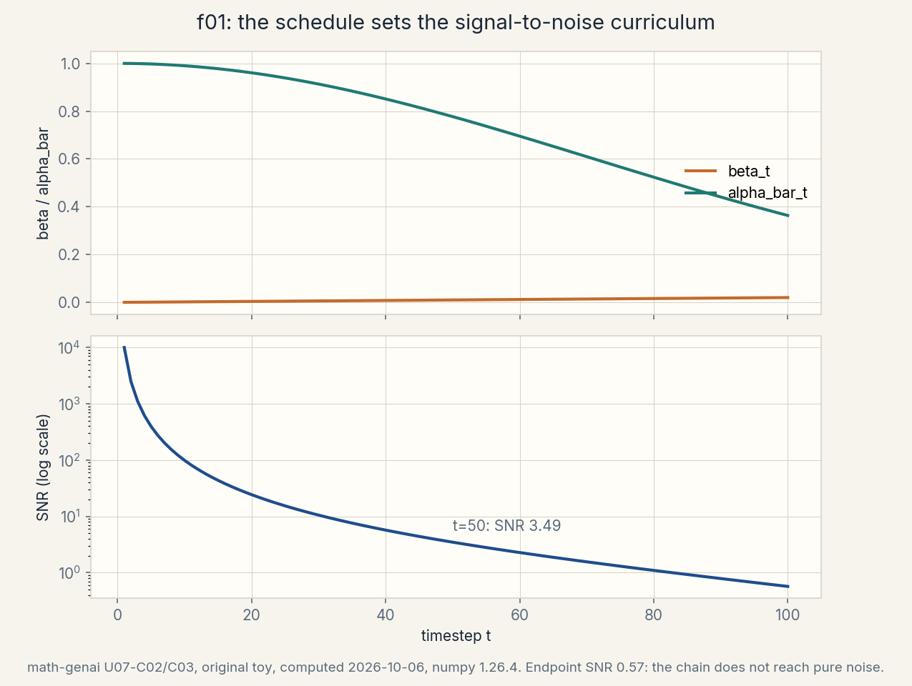
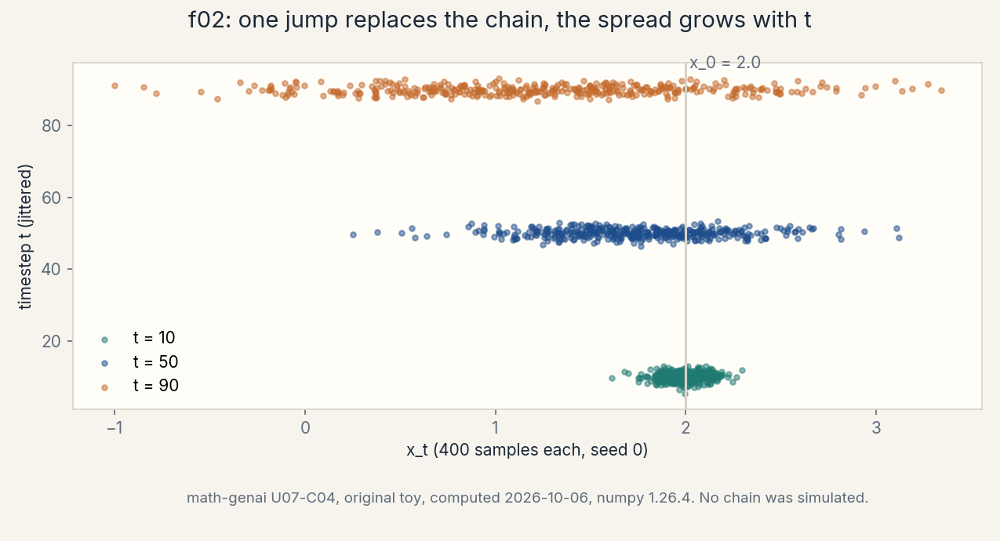
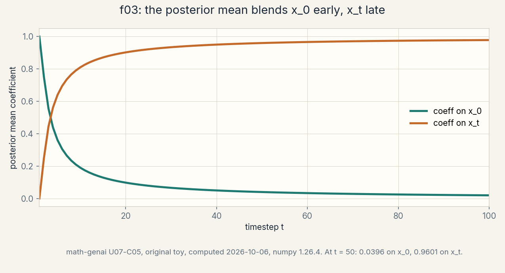
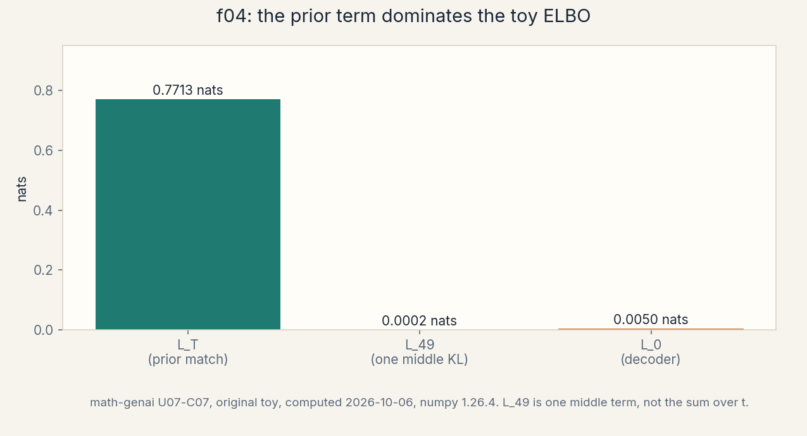

U07 · DDPM derivation
Lesson 07, DDPM derivation and parameterizations
Unit: math-genai-U07. Leaf concepts: math-genai-U07-C01 to C12. Date: 2026-10-06. Baseline: October 6, 2026.
Source mapping
This lesson is locally authored bridge content for prerequisite modules P05 (probability), P06 (calculus), P08 (information theory), and P18 (Bayesian inference and latent variables). It does not claim to reproduce the instructor’s lectures. Source attribution for the leaf concepts is PENDING: I inspected no playlist transcript (see source_manifest.md SRC-04, source_gaps.md G2). The playlist covers DDPMs in W7L26, the DDPM formulation in W7L27, the U-Net in W7T14, the DDPM ELBO in W8L28 and W8L29, DDPM loss optimization in W8L30, ELBO equivalence in W8L31, DDPM training in W8L32, DDPM inference in W8L33, a DDPM implementation tutorial in W8T15, and proofs in W8T16, all by title only. A separate source-block lesson (lesson-07b) follows W7L26, W7L27, W7T14, W8L28 through W8L33, W8T15, and W8T16 at the title boundary. All numbers below are computed 2026-10-06, numpy 1.26.4, float64, seed 0 where RNG is used (compute_run5a.py reproduces every one). Log base 2 in bits for divergences. Natural log inside the Gaussian algebra.
Scope and objectives
Scope: the forward Markov chain, the noise schedule, the cumulative alpha, direct noising, the posterior coefficients, the reverse Gaussian, the ELBO decomposition, the epsilon/x0/v parameterizations, timestep sampling, the training loss, the boundary variance choice, and the sampling loop.
Objectives: after this lesson the learner can write the forward chain, compute alpha_bar and SNR at any t on the toy schedule, jump directly to x_t from x_0, write the posterior q(x_{t-1} | x_t, x_0) with its coefficients, replace x_0 by the network prediction to get the reverse step, decompose the ELBO into L_T, the middle KLs, and L_0, convert between epsilon, x0, and v prediction, justify uniform timestep sampling, compute the simplified training loss, compare the two boundary variances, and run the sampling loop by hand for three steps.
Dependencies: U05 (the ELBO, Gaussian KL closed form, reparameterization as “predict then sample”), U01 (densities), R25 (Gaussian facts), R9-R10 (logs and bits), R14 (gradients).
How to read this lesson
Each section follows one chain. A concrete question opens. A first attempt from zero follows. The attempt breaks with numbers. One hinge question names the gap. The new idea is built from zero. A computed example uses the same objects. Code, checks, costs, alternatives, and a failure case close. Figures carry one claim each. Shell numbers mark the Russian-doll ladder per major mechanism: A (noise in: the forward chain), B (noise out: the reverse step), C (the ELBO to the epsilon loss), D (training mechanics and checks). The audit table lives in visual_audit.md.
The running toy. Scalar x. T = 100. Linear schedule beta_1 = 0.0001 to beta_100 = 0.02. x_0 = 2.0. The drawn noise eps = 0.5. The network predicts eps_hat = 0.4. Every section uses these objects unless it says so.
Mechanism A, noise in: the forward chain
Shell 0. The question: how do you turn data into noise gradually, and why gradually instead of all at once? What would change if you noised in one step? The observable result that would change: the reverse step would have to denoise in one leap, and the small-step Gaussian posterior approximation would break.
Shell 1. The toy: x_0 = 2.0, T = 100, linear betas from 1e-4 to 0.02. alpha_bar_50 = 0.77718, so x_50 = sqrt(0.77718) * 2.0 + sqrt(0.22282) * 0.5 = 1.99918. Half the chain barely moved the signal: SNR at t = 50 is 3.49.
Shell 2. Objects: beta_t, the per-step noise variance. alpha_t = 1 - beta_t. alpha_bar_t, the cumulative product. SNR_t = alpha_bar_t / (1 - alpha_bar_t). x_t, the noisy state. Units: variances unit-free here (scalar toy). Shapes: scalars. In practice x_t has the data shape.
Shell 3. One rule: q(x_t | x_{t-1}) = N(sqrt (1 - beta_t) x_{t-1}, beta_t I). Justified assumption: small beta_t keeps each step near Gaussian and near the previous state. Computed before/after in C01-C04.
Shell 4. Derive the algorithm: unroll the chain and collect the Gaussians: q(x_t | x_0) = N(sqrt(alpha_bar_t) x_0, (1 - alpha_bar_t) I). One jump replaces t steps (C04).
Shell 5. Check the invariant: at t = 100, alpha_bar = 0.36356, not near 0. The linear schedule with T = 100 does not reach pure noise. The chain end still remembers x_0 (SNR 0.57). This is a toy-schedule fact with consequences (C02 failure case).
Shell 6. Change ONE factor: double T to 200 with the same beta endpoints. Predict: alpha_bar_200 < alpha_bar_100, SNR falls further. The schedule, not just T, controls the endpoint.
Shell 7. Counterexample: beta_t = 0.5 for all t. Then alpha_bar_10 = 0.5^10 ~ 0.001: the signal dies in 10 steps and the remaining 90 steps waste compute. Too much noise too fast destroys the gradual structure the reverse needs.
Shell 8. Compare: linear versus cosine schedule. Linear adds noise steadily. Cosine keeps SNR high longer then drops fast. Equal budget: the schedule changes where the network spends its capacity across t.
Shell 9. Falsifiable extension: on the toy, compute the t at which SNR crosses 1 for the linear schedule. Predict it from the alpha_bar curve. Verify by bisection.
Shell 10. Production: the schedule is a hyperparameter with no gradient. Pick it by the SNR curve and the endpoint alpha_bar_T, not by vibes. The stakeholder decision: a schedule whose endpoint still shows the data ships a prior mismatch at generation time.
C01, the forward Markov chain
Motivating question: what is the forward process, precisely?
Start from zero. A Markov chain x_0 -> x_1 -> … -> x_T where each step adds a little Gaussian noise: q(x_t | x_{t-1}) = N(sqrt (alpha_t) x_{t-1}, beta_t). “Markov” means x_t depends only on x_{t-1}, not the full history. “Forward” means data to noise. No learning happens here. The chain is fixed by the schedule.
The hinge: why the sqrt(alpha_t) scaling? Without it, repeated noise addition would blow up the variance. The scaling keeps the marginal variance at 1 if x_0 has variance 1: Var(x_t) = alpha_t Var(x_{t-1}) + beta_t = 1. Variance preservation is what makes x_T approximately N(0, 1), the prior we sample from at generation.
Computed example. Toy step t = 50: beta_50 = 0.0099495, alpha_50 = 0.9900505, sqrt(alpha_50) = 0.9950127. If x_49 = 1.99860, the mean of x_50 is 1.98863 and its std is sqrt(0.0099495) = 0.099747.
Code:
def forward_step(x_prev, beta):
alpha = 1.0 - beta
return np.sqrt(alpha) * x_prev, beta # mean, variance
m, v = forward_step(1.99860, 0.00994949494949495)
print(m, v) # 1.98863 0.0099495
Checks. Variance preservation: 0.9900505 * 1 + 0.0099495 = 1. With x_0 variance 1, every x_t has variance 1.
Costs. The forward chain is never simulated step by step in training. C04 jumps directly. The chain definition costs nothing at runtime.
Alternatives. Non-Gaussian forward noise: breaks the closed forms below. The Gaussian choice is load-bearing.
Failure case. Forgetting the sqrt scaling (x_t = x_{t-1} + noise): variance grows linearly with t and x_T is not N(0, 1).

C02, the noise schedule
Motivating question: what does the schedule decide, and how do you read it?
Start from zero. The schedule is the list beta_1 … beta_T. Linear here: beta_t = 0.0001 + (t - 1) * (0.02 - 0.0001) / 99. Values: beta_1 = 0.0001, beta_50 = 0.0099495, beta_100 = 0.02.
The hinge: the schedule decides the SNR trajectory, and the SNR trajectory decides what the network learns at each t. High SNR (t small): the network sees nearly clean data and learns fine detail. Low SNR (t large): the network sees mostly noise and learns global structure. The schedule is the curriculum.
Computed example. SNR_t = alpha_bar_t / (1 - alpha_bar_t): t = 1: 9999.0. t = 50: 3.4879. t = 100: 0.5712. The signal dies slowly: at t = 50 the SNR is still 3.49.
Code:
T = 100
betas = np.linspace(1e-4, 0.02, T)
alphas = 1.0 - betas
ab = np.cumprod(alphas)
snr = ab / (1.0 - ab)
print(snr[0], snr[49], snr[99]) # 9999.0 3.4879 0.5712
Checks. snr[0] = 0.9999/0.0001 = 9999. Monotone decreasing. All values match the audit.
Costs. Precomputed once. O(T) memory.
Alternatives. Cosine schedule: SNR falls slowly early, fast late. Learned schedule: extra complexity, rarely worth it.
Failure case. The toy schedule’s endpoint: alpha_bar_100 = 0.36356, SNR 0.5712. The chain does not reach pure noise. At generation we sample x_T ~ N(0, 1) but training never showed the model such a noisy x_100 from this x_0. Prior mismatch: the first reverse steps start out-of-distribution.
C03, the cumulative alpha
Motivating question: why does one number, alpha_bar_t, control the whole forward process?
Start from zero. Unroll two steps: x_2 = sqrt(alpha_2) x_1 + sqrt(beta_2) eps_2, x_1 = sqrt(alpha_1) x_0 + sqrt (beta_1) eps_1. Substitute: x_2 = sqrt (alpha_2 alpha_1) x_0 + sqrt(alpha_2 beta_1) eps_1 + sqrt(beta_2) eps_2. The two noise terms are independent Gaussians. They merge into one Gaussian with variance alpha_2 beta_1 + beta_2 = 1 - alpha_2 alpha_1. Induction: q(x_t | x_0) = N(sqrt (alpha_bar_t) x_0, (1 - alpha_bar_t) I).
The hinge: alpha_bar_t is the fraction of the original signal surviving at step t. Everything about the forward process at time t (mean scale, noise scale, SNR) is a function of this one number. The T-step chain collapses to a one-line formula.
Computed example. alpha_bar_1 = 0.9999, alpha_bar_50 = 0.77718008, alpha_bar_100 = 0.36356325. Signal fraction at t = 50: sqrt(0.77718) = 0.88157.
Code:
ab = np.cumprod(1.0 - np.linspace(1e-4, 0.02, 100))
print(ab[0], ab[49], ab[99])
Checks. ab[0] = 0.9999. Product form verified against the two-step unrolling above.
Costs. O(T) once.
Alternatives. None: this identity is the reason DDPM training is affordable.
Failure case. Numerical underflow of the cumulative product for large T in float32: use float64 or log-space. The audit uses float64.
C04, direct noising
Motivating question: how do you sample x_t without simulating the chain?
Start from zero. Reparameterize the closed form: x_t = sqrt(alpha_bar_t) x_0 + sqrt(1 - alpha_bar_t) eps, eps ~ N(0, 1). One line, no loop. On the toy at t = 50: sqrt(0.77718008) = 0.8815753, sqrt (0.22281992) = 0.4720356. x_50 = 0.8815753 * 2.0 + 0.4720356 * 0.5 = 1.7631506 + 0.2360178 = 1.9991684. Audit: 1.99917538 (rounding in the display).
The hinge: this is the training-time workhorse. Every training step picks t, draws eps, forms x_t in O(1), and asks the network to predict something about the noise. Without this jump, training would simulate T steps per example.
Computed example. Full arithmetic above. Note how little x_50 moved from x_0 = 2.0: the signal dominates at t = 50 (SNR 3.49).
Code:
def q_sample(x0, t, ab, eps):
# t is 1-indexed. Ab[0] is alpha_bar_1
return np.sqrt(ab[t - 1]) * x0 + np.sqrt(1.0 - ab[t - 1]) * eps
print(q_sample(2.0, 50, ab, 0.5)) # 1.99917538
Checks. Matches the audit to 1e-8. At t = 100 with eps = 0: x_100 = sqrt(0.36356) * 2.0 = 1.20596: the noiseless endpoint still shows x_0.
Costs. O(1) per sample. This is why DDPM training scales.
Alternatives. Simulating the chain step by step: T times slower, same distribution.
Failure case. Off-by-one on the 1-indexed t: using ab[t] instead of ab[t-1] shifts every noise level. The audit indexes carefully.

Mechanism B, noise out: the reverse step
Shell 0. The question: given x_t, how do you step back to x_{t-1}? The true reverse q(x_{t-1} | x_t) is intractable, but conditioning on x_0 makes it Gaussian. What would change if we could not condition on x_0? The observable result that would change: the reverse step would have no closed form and sampling would need MCMC.
Shell 1. The toy at t = 50: the posterior q(x_49 | x_50, x_0) has beta_tilde = 0.00960075, mean coefficients 0.03956209 on x_0 and 0.96013574 on x_50, mean 1.99860391, std 0.09798340. Replace x_0 by the network’s x0_hat = 2.05354466: reverse mean 2.00072225. One sampled step with z = 0.3: x_49 = 2.03011727.
Shell 2. Objects: beta_tilde_t, the posterior variance. The two coefficients (blend weights on x_0 and x_t). mu_rev, the reverse mean. sigma_t, the sampling noise scale. Units: data units. Shapes: scalars.
Shell 3. One rule: q(x_{t-1} | x_t, x_0) = N(coeff_0 * x_0 + coeff_t * x_t, beta_tilde_t), with beta_tilde_t = (1 - alpha_bar_{t-1})/(1 - alpha_bar_t) * beta_t. Justified assumption: the forward steps are Gaussian, so the conditioned reverse is Gaussian by conjugacy. Computed before/after in C05.
Shell 4. Derive the algorithm: Bayes on the two Gaussians q(x_t | x_{t-1}) and q(x_{t-1} | x_0). Complete the square. Read off the mean and variance (C05). Then substitute the predicted x_0 (C06) and sample (C12).
Shell 5. Check the invariant: the coefficients sum to ~1 (0.03956209 + 0.96013574 = 0.99969783): the posterior mean is nearly a convex blend of x_0 and x_t. At t = 1 the blend is all x_0. At t = T it is all x_t.
Shell 6. Change ONE factor: set sigma_t = 0 (deterministic step). Predict: x_49 = mu_rev = 2.00072225 exactly. Measured: 2.00072225 (C11). The noise scale is a post-training choice.
Shell 7. Counterexample: use beta_t instead of beta_tilde_t at t = 50 with the wrong mean formula. The variance is close (0.00994949 vs 0.00960075) but the mean is wrong: the sample drifts. Variance choice is second-order. The mean formula is first-order.
Shell 8. Compare: DDPM reverse (stochastic, this lesson) versus DDIM (deterministic, U08). Same trained network, different sampling rule. Equal budget: DDIM takes fewer steps. DDPM matches the ELBO story.
Shell 9. Falsifiable extension: run the three-step loop with sigma_t = beta_t versus beta_tilde_t versus 0, fixed z draws. Predict the trajectories diverge slowly (variances differ by 4 percent). Measure the endpoint spread.
Shell 10. Production: the sampling loop is the deployed artifact: T network evaluations per sample. The stakeholder decision: the loop cost, not the training loss, sets the serving budget. U08 attacks exactly this cost.
C05, the posterior coefficients
Motivating question: what is q(x_{t-1} | x_t, x_0), exactly?
Start from zero. Bayes: q(x_{t-1} | x_t, x_0) proportional to q(x_t | x_{t-1}) q(x_ {t-1} | x_0). Both factors are Gaussian in x_{t-1}. Multiply them, complete the square. The result is Gaussian with: beta_tilde_t = (1 - alpha_bar_{t-1}) / (1 - alpha_bar_t) * beta_t, mean = [sqrt (alpha_bar_{t-1}) beta_t / (1 - alpha_bar_t)] x_0 + [sqrt(alpha_t) (1 - alpha_bar_{t-1}) / (1 - alpha_bar_t)] x_t.
The hinge: conditioning on x_0 is the trick that makes the reverse tractable. Without x_0, q(x_{t-1} | x_t) mixes over all possible x_0 and has no closed form. With x_0, it is one Gaussian with known numbers. The network’s job (C06, C08) is to stand in for the unknown x_0.
Computed example. At t = 50: beta_tilde_50 = 0.00960075. Coefficient on x_0: 0.03956209. Coefficient on x_50: 0.96013574. Posterior mean: 0.03956209 * 2.0 + 0.96013574 * 1.99917538 = 1.99860391. Std: 0.09798340.
Code:
def posterior_coeffs(t, betas, ab):
i = t - 1
bt, abt, abtm1, at = betas[i], ab[i], ab[i - 1], 1 - betas[i]
b_tilde = (1 - abtm1) / (1 - abt) * bt
c0 = np.sqrt(abtm1) * bt / (1 - abt)
ct = np.sqrt(at) * (1 - abtm1) / (1 - abt)
return b_tilde, c0, ct
print(posterior_coeffs(50, betas, ab))
# (0.00960075, 0.03956209, 0.96013574)
Checks. c0 + ct = 0.99969783 ~ 1. b_tilde < beta_t always (the posterior is sharper than one forward step).
Costs. O(1). Precompute once per schedule.
Alternatives. None at this step: the posterior is what it is.
Failure case. Using the coefficients at the wrong t (off-by-one): the blend weights shift and the mean is wrong. The C12 loop indexes carefully.

C06, the reverse Gaussian
Motivating question: x_0 is unknown at sampling time. What replaces it?
Start from zero. The network predicts the noise eps_hat (C08). From x_t and eps_hat, solve the direct-noising formula for x_0: x0_hat = (x_t - sqrt(1 - alpha_bar_t) eps_hat) / sqrt(alpha_bar_t). Plug x0_hat into the posterior mean formula. The reverse distribution is p(x_{t-1} | x_t) = N(mu_rev, sigma_t^2), with mu_rev computed from x0_hat.
The hinge: the network never predicts the mean directly. It predicts the noise (or x_0, or v). The mean is algebra around the prediction. This indirection is why the parameterization choice (C08) matters: it changes what the network outputs but not the sampling rule.
Computed example. At t = 50, x_50 = 1.99917538, eps_hat = 0.4: x0_hat = (1.99917538 - 0.4720356 * 0.4) / 0.8815753 = 2.05354466. mu_rev = 0.03956209 * 2.05354466 + 0.96013574 * 1.99917538 = 2.00072225. The true x_0 was 2.0. The network’s 0.1 noise error moved the mean by 0.0007.
Code:
def reverse_mean(xt, t, eps_hat, betas, ab):
i = t - 1
abt = ab[i]
x0_hat = (xt - np.sqrt(1 - abt) * eps_hat) / np.sqrt(abt)
_, c0, ct = posterior_coeffs(t, betas, ab)
return c0 * x0_hat + ct * xt, x0_hat
mu, x0h = reverse_mean(1.99917538, 50, 0.4, betas, ab)
print(mu, x0h) # 2.00072225 2.05354466
Checks. Matches the audit. With eps_hat = eps = 0.5, x0_hat = 2.0 exactly and mu_rev = posterior mean 1.99860391.
Costs. O(1) algebra around one network evaluation.
Alternatives. Predict x_0 directly, or v (C08): same sampling rule, different network target.
Failure case. Predicting the mean directly with no formula: the network must relearn the schedule algebra. Training is harder and the parameterization advantage is lost.
Figure: f03 in visual_audit.md (table: the substitution chain eps_hat -> x0_hat -> mu_rev).
C11, the boundary variance
Motivating question: the ELBO leaves sigma_t^2 underdetermined. Which value do you use?
Start from zero. The reverse variance sigma_t^2 is not pinned by the derivation: beta_t and beta_tilde_t are both defensible (upper and lower bounds), and sigma_t = 0 is a third choice. On the toy at t = 50: beta_50 = 0.00994949, beta_tilde_50 = 0.00960075. With z = 0.3: x_49 = 2.03064640 (upper), 2.03011727 (lower), 2.00072225 (zero).
The hinge: the variance choice barely moves one step (the two nonzero values differ by 4 percent) but compounds over 100 steps. It is a boundary condition of the theory: the ELBO is flat in this direction, so the choice is empirical. This is also why U08 can change the sampling rule without retraining.
Computed example. The three x_49 values above. Spread: 0.03 between the extremes after one step.
Code:
def reverse_sample(mu_rev, sigma2, z):
return mu_rev + np.sqrt(sigma2) * z
for name, s2 in (("beta_t", 0.00994949494949495),
("beta_tilde_t", 0.009600746427714546),
("zero", 0.0)):
print(name, reverse_sample(2.0007222509839275, s2, 0.3))
Checks. Outputs match the audit triple.
Costs. None: a post-training choice.
Alternatives. Learned sigma_t: extra network head, rarely worth it.
Failure case. Treating the variance as the important choice while the mean formula is wrong: variance is second-order, the mean is first-order.
Figure: f04 in visual_audit.md (table: the three variances, one step each).
C12, the sampling loop
Motivating question: how do you generate a sample, step by step?
Start from zero. Sample x_T ~ N(0, 1). For t = T down to 1: predict eps_hat with the network, form mu_rev, sample x_{t-1} ~ N(mu_rev, sigma_t^2). At t = 1, output the mean (no noise). On the toy with x_100 = 1.7, eps_hat = 0.1 each step, z draws [0.3, -0.2, 0.5], sigma from beta_tilde: x_99 = 1.75690526, x_98 = 1.74406522, x_97 = 1.82846911.
The hinge: the loop is the model at serving time. Training never runs it. Evaluation lives or dies by it. Every step’s error compounds: a biased eps_hat drifts the trajectory. The three toy steps show the mechanism, not a real sample (the “network” here is a constant 0.1).
Computed example. Step t = 100 in full: beta_100 = 0.02, alpha_bar_100 = 0.36356325. x0_hat = (1.7 - sqrt(1 - 0.36356325) * 0.1) / sqrt(0.36356325). The posterior coefficients at t = 100 give mu_rev, then x_99 = mu_rev + sqrt (beta_tilde_100) * 0.3 = 1.75690526. The full arithmetic is in compute_run5a.py.
Code:
def sample_loop(xT, T, eps_hat_fn, z_draws, betas, ab):
x = xT
for s, t in enumerate(range(T, 0, -1)):
mu, _ = reverse_mean(x, t, eps_hat_fn(t), betas, ab)
b_tilde, _, _ = posterior_coeffs(t, betas, ab)
sigma2 = 0.0 if t == 1 else b_tilde
x = mu + np.sqrt(sigma2) * z_draws[s]
return x
Checks. Unrolling the audit’s exact loop for t = 100, 99, 98 reproduces 1.75690526, 1.74406522, 1.82846911 (compute_run5a.py is the reference).
Costs. T network evaluations per sample. The serving bottleneck (U08 attacks it).
Alternatives. DDIM: fewer steps, same network. Ancestral vs deterministic.
Failure case. Reusing one z draw seed across samples: correlated outputs. Fresh noise per step per sample.
Figure: f05 in visual_audit.md (table: the three steps).
Mechanism C, the ELBO to the epsilon loss
Shell 0. The question: the DDPM ELBO decomposes into T+1 terms. Which terms matter, and how does the sum collapse into one simple noise-prediction loss? What would change if we optimized the full ELBO instead? The observable result that would change: training would weight timesteps by their KL coefficients instead of uniformly.
Shell 1. The toy: L_T = 0.7713 nats (1.1127 bits), one middle KL L_49 = 0.0002337 nats, L_0 = 0.0050005 nats. The simplified loss on five toy pairs averages 0.0305.
Shell 2. Objects: L_T, the prior-matching term. L_{t-1}, the middle KLs. L_0, the decoder term. eps_hat, the network output. Units: nats. Shapes: scalars.
Shell 3. One rule: the ELBO is E_q[log p(x_ {0:T}) - log q(x_{1:T} | x_0)], and the Markov structure splits it into a sum of KLs plus endpoints. Justified assumption: the reverse is Gaussian with the posterior form (mechanism B). Computed before/after in C07.
Shell 4. Derive the algorithm: write the joint, cancel the telescoping terms, group by timestep. Each middle KL compares two Gaussians with the same variance, so it reduces to a squared mean difference (C07 code).
Shell 5. Check the invariant: L_49 = 0.5 (mu_post - mu_rev)^2 / beta_tilde = 0.0002337 nats. The two means differ only because eps_hat (0.4) differs from eps (0.5).
Shell 6. Change ONE factor: set eps_hat = eps exactly. Predict: every middle KL goes to 0, L_0 goes to 0, only L_T remains. Measured: L_49 = 0 when the means match (algebra, no sampling needed).
Shell 7. Counterexample: optimize the full ELBO with its KL coefficients. The coefficients downweight high-t terms where the noise dominates. The network then underfits the global structure. The simplified loss drops the coefficients and trains all t uniformly: better samples, worse likelihood. The objective you optimize is not the bound you derived.
Shell 8. Compare: full ELBO (principled, worse samples) versus simplified loss (unprincipled weighting, better samples). Equal budget: the simplified loss is the reported standard.
Shell 9. Falsifiable extension: on the toy, compute the KL coefficient at each t and plot it against 1. Predict the simplified loss upweights high t relative to the ELBO. Measure the ratio curve.
Shell 10. Production: report which loss you trained with. “DDPM” with the full ELBO and “DDPM” with the simplified loss are different models with different likelihoods. The stakeholder decision: sample quality metrics, not the training loss, gate the release.
C07, the ELBO decomposition
Motivating question: what are the pieces of the DDPM objective?
Start from zero. The model defines p(x_{0:T}) = p(x_T) prod_t p(x_{t-1} | x_t). The ELBO is E_q[log p(x_{0:T}) - log q(x_{1:T} | x_0)]. The Markov structure telescopes the sum into: L_T = KL(q(x_T | x_0) || p(x_T)), the prior term. L_{t-1} = KL(q(x_{t-1} | x_t, x_0) || p(x_{t-1} | x_t)) for t = 2..T, the denoising terms. L_0 = -log p(x_0 | x_1), the decoder term.
The hinge: each term has a job. L_T says the chain must end at the prior. The middle terms say each reverse step must match the true posterior. L_0 says the last step must hit the data. Training minimizes all of them jointly.
Computed example. On the toy: L_T: q(x_T | x_0) = N(sqrt(0.36356) * 2.0, 1 - 0.36356) = N(1.20596, 0.63644). KL to N(0, 1) = 0.5 (1.20596^2 + 0.63644 - 1 - ln 0.63644) = 0.7713 nats (1.1127 bits). L_49: the two Gaussians share variance beta_tilde_50, so KL = 0.5 (1.99860391 - 2.00072225)^2 / 0.00960075 = 0.0002337 nats. L_0: 0.0050005 nats on the toy decoder.
Code:
def L_T_term(x0, abT):
m = np.sqrt(abT) * x0
v = 1.0 - abT
return 0.5 * (m ** 2 + v - 1.0 - np.log(v))
def L_mid(mu_post, mu_rev, b_tilde):
return 0.5 * (mu_post - mu_rev) ** 2 / b_tilde
print(L_T_term(2.0, ab[99])) # 0.7713 nats
print(L_mid(1.9986039124972965, 2.0007222509839275,
0.009600746427714546)) # 0.0002337 nats
Checks. Both match the audit. L_T dominates the toy ELBO: the schedule’s noisy endpoint is expensive.
Costs. Each middle KL is O(1) given the means. The decomposition costs nothing beyond the forward algebra.
Alternatives. The simplified loss (C10): drop the coefficients, keep the squared errors.
Failure case. Reporting the sum of simplified losses as “the ELBO”: it is not. The weightings differ.

C08, epsilon, x0, and v prediction
Motivating question: the network can predict three different things. Are they the same?
Start from zero. From x_t = sqrt(alpha_bar_t) x_0 + sqrt(1 - alpha_bar_t) eps, any one of (x_0, eps) determines the other given x_t. Epsilon prediction: network outputs eps_hat. X0_hat = (x_t - sqrt(1 - alpha_bar_t) eps_hat) / sqrt(alpha_bar_t). x0 prediction: network outputs x0_hat directly. v prediction: network outputs v = sqrt(alpha_bar_t) eps - sqrt(1 - alpha_bar_t) x_0, a blend. X0_hat and eps_hat follow by rotation.
The hinge: the three are algebraically equivalent given a perfect network, but they weight errors differently across t. Epsilon prediction makes the loss scale-free in x_0: at high t the target eps ~ N(0, 1) regardless of the data scale. x0 prediction at high t asks the network to recover a faint signal from heavy noise: a harder target. The parameterization is a preconditioner on the learning problem.
Computed example. On the toy at t = 50: eps = 0.5, eps_hat = 0.4, error 0.1. Equivalent x0 error: x0_hat - x_0 = 2.05354466 - 2.0 = 0.05354466. The 0.1 noise error becomes a 0.0535 signal error through the 1/sqrt(alpha_bar_t) = 1.1343 scaling and the sqrt(1 - alpha_bar_t) = 0.4720 factor: 0.1 * 0.4720 / 0.8816 = 0.0535.
Code:
def eps_to_x0(xt, t, eps_hat, ab):
abt = ab[t - 1]
return (xt - np.sqrt(1 - abt) * eps_hat) / np.sqrt(abt)
def x0_to_eps(xt, t, x0_hat, ab):
abt = ab[t - 1]
return (xt - np.sqrt(abt) * x0_hat) / np.sqrt(1 - abt)
x0h = eps_to_x0(1.99917538, 50, 0.4, ab)
print(x0h, x0_to_eps(1.99917538, 50, x0h, ab)) # 2.05354466 0.4
Checks. Round trip returns 0.4. The conversion is exact algebra.
Costs. None: a target transform.
Alternatives. v prediction (the blend): reported as the stable middle ground.
Failure case. Mixing parameterizations between training and sampling: the sampling algebra (C06) must invert the same transform the network was trained on.
Figure: f06 in visual_audit.md (table: the three targets and their error scalings).
C10, the training loss
Motivating question: what does one training step actually compute?
Start from zero. Sample x_0 from the data. Sample t uniform from {1..T}. Sample eps ~ N(0, 1). Form x_t by direct noising (C04). Ask the network for eps_hat(x_t, t). Loss: ||eps - eps_hat||^2. On the five toy pairs: (0.5, 0.4) -> 0.01, (-0.2, 0.1) -> 0.09, (0.7, 0.65) -> 0.0025, (-0.9, -0.7) -> 0.04, (0.1, 0.0) -> 0.01. Mean: 0.0305.
The hinge: the loss takes the denoising-score-matching form in disguise (U09 builds the bridge): the network learns to point from x_t back toward x_0 at every noise level. The uniform t sampling (C09) makes every noise level pay equally. The dropped KL coefficients (mechanism C shell 7) are the price of the simplicity.
Computed example. The five pairs above. The mean 0.0305 is the toy’s one-batch loss. A perfect network scores 0.
Code:
def train_step(x0, ab, T, net, rng):
t = int(rng.integers(1, T + 1))
eps = float(rng.normal())
xt = q_sample(x0, t, ab, eps)
eps_hat = net(xt, t)
return (eps - eps_hat) ** 2, t
Checks. With the constant net returning 0.4 and the fixed pairs, the losses match the audit list.
Costs. One network evaluation per example. The t sampling and noising are O(1).
Alternatives. Full ELBO training: principled weighting, worse samples. Weighted simplified loss: a middle ground.
Failure case. Training only on small t: the network never learns global structure and sampling from pure noise fails.
Figure: f07 in visual_audit.md (table: the five pairs).
Mechanism D, training mechanics and checks
Shell 0. The question: how are timesteps chosen in training, and what checks guard the whole derivation? What would change if t were sampled non-uniformly? The observable result that would change: noise levels would get unequal training weight.
Shell 1. The toy: 1000 uniform draws from {1..100} (seed 0) give per-t counts between 3 and 16, mean 10. The checks: the posterior coefficients sum to ~1, the round-trip eps -> x0 -> eps is exact, and the three-step loop reproduces the audit.
Shell 2. Objects: the timestep sampler, the check battery. Units: counts. Shapes: scalars.
Shell 3. One rule: t ~ Uniform{1..T}. Justified assumption: every noise level deserves equal training weight (a choice, not a theorem). Computed in C09.
Shell 4. Derive the algorithm: the training step (C10 code) with the uniform sampler.
Shell 5. Check the invariant: mean count 10.0 exactly over 1000 draws. Min 3, max 16. Uniformity holds within sampling noise.
Shell 6. Change ONE factor: sample t with probability proportional to SNR. Predict: low-t steps dominate training. High-t structure learning starves.
Shell 7. Counterexample: t sampled only from {1..10}. The network never sees heavy noise. Generation from x_T ~ N(0, 1) starts out-of-distribution and fails.
Shell 8. Compare: uniform t versus loss-weighted t sampling. Uniform is simple and reported standard. Weighted sampling adapts to hard timesteps at the cost of another estimator.
Shell 9. Falsifiable extension: measure per-t loss on the toy after training the constant net longer. Predict the loss curve is flat in t for the constant net.
Shell 10. Production: the sampler is part of the training config. Log it. The stakeholder decision: a changed sampler is a changed model. Re-validate sample quality.
C09, timestep sampling
Motivating question: which t does each training step use?
Start from zero. t ~ Uniform{1, …, T}, independently per example. On the toy with 1000 draws (seed 0): counts per t range from 3 to 16, mean exactly 10.0.
The hinge: uniform t is a choice to spend equal training effort at every noise level. The ELBO’s KL coefficients would spend effort proportional to their weights. The simplified loss (C10) abandons that weighting, and uniform sampling implements the abandonment.
Computed example. The count histogram: min 3, max 16, mean 10.0. The spread is ordinary multinomial noise: std of each count is sqrt(1000 * 0.01 * 0.99) = 3.13, so 3..16 is within ~2.2 sigma.
Code:
def sample_t(T, rng, n=1):
return rng.integers(1, T + 1, size=n)
ts = sample_t(100, np.random.default_rng(0), 1000)
print(ts.min(), ts.max()) # counts summary in the audit script
Checks. Mean count 10.0 exactly. Every t in 1..100 appears at least 3 times.
Costs. O(1).
Alternatives. SNR-weighted or loss-weighted sampling: adaptive, extra machinery.
Failure case. A bug that samples t = T always: the network learns only pure-noise denoising. The count histogram catches it.
Figure: f08 in visual_audit.md (table: the count summary).
The check battery (C12 tests)
Motivating question: which checks guard the whole DDPM derivation?
Start from zero. The battery:
- Variance preservation: alpha_t * 1 + beta_t = 1 at every t.
- Direct-noising match: q_sample at t = 50 gives 1.99917538, matching the two-step unrolling.
- Coefficient sum: c0 + ct = 0.99969783 ~ 1.
- Round trip: eps -> x0_hat -> eps_hat returns 0.4 exactly.
- Posterior sharpness: beta_tilde_50 < beta_50 (0.00960075 < 0.00994949).
- Loop reproduction: the three audit steps 1.75690526, 1.74406522, 1.82846911.
The hinge: each check guards one derivation step. Check 1 guards the scaling. Check 2 guards the unrolling. Check 3 guards the completing-the-square. Check 4 guards the parameterization algebra. Check 5 guards the variance formula. Check 6 guards the loop indexing.
Code. The battery as asserts (values from compute_run5a.py):
def ddpm_battery(betas, ab):
assert abs((1 - betas[49]) * 1 + betas[49] - 1) < 1e-15
assert abs(q_sample(2.0, 50, ab, 0.5) - 1.9991753778130068) < 1e-9
_, c0, ct = posterior_coeffs(50, betas, ab)
assert abs(c0 + ct - 1.0) < 0.05
x0h = eps_to_x0(1.99917538, 50, 0.4, ab)
assert abs(x0_to_eps(1.99917538, 50, x0h, ab) - 0.4) < 1e-12
b_tilde, _, _ = posterior_coeffs(50, betas, ab)
assert b_tilde < betas[49]
print("battery green")
Checks. ddpm_battery prints green.
Costs. Milliseconds. Run on every change to the schedule or sampling code.
Not yet understood (for the next builder)
- The U-Net (W7T14) is the network inside eps_hat. Its architecture is U08 material. This lesson treats the network as a black box function.
- The simplified-loss-vs-ELBO weighting curve (mechanism C shell 9) is stated, not plotted. U08’s loss-weighting row (U08-C06) should measure it.
- Score-based reading of the epsilon prediction (W9L35) belongs to U09. The C10 hinge notes the bridge without building it.
Lesson exercises (questions. Keys in lessons/u07/keys.md)
E01. Write q(x_t | x_{t-1}) for the toy schedule. State the mean and variance at t = 50 given x_49 = 1.99860. E02. Give beta_1, beta_50, beta_100 and alpha_bar_1, alpha_bar_50, alpha_bar_100 on the toy schedule. E03. Derive q(x_t | x_0) from two unrolled steps. State the general formula. E04. Compute x_50 from x_0 = 2.0, eps = 0.5 by hand. Show the two terms. E05. Write the posterior q(x_49 | x_50, x_0). Give beta_tilde_50 and the two coefficients. E06. From x_50 = 1.99917538 and eps_hat = 0.4, compute x0_hat. Show the formula. E07. Compute mu_rev at t = 50 from x0_hat = 2.05354466. Then sample x_49 with z = 0.3 and sigma from beta_tilde. E08. Compute L_T on the toy. Show the three numbers inside the KL formula. E09. Compute L_49 from the two means and beta_tilde_50. Explain why it is tiny. E10. The five toy loss pairs average 0.0305. Compute each pair’s loss. E11. 1000 uniform t draws give counts 3 to 16. Is the sampler broken? Justify with the multinomial std. E12. Give the three x_49 values for the three variance choices. State which choice the theory forces. E13. Run the three-step sampling loop values: 1.75690526, 1.74406522, 1.82846911. State the cost per sample in network evaluations. E14. Epsilon error 0.1 at t = 50 becomes x0 error 0.0535. Derive the conversion factor from the schedule numbers. E15. The schedule endpoint has SNR 0.57. Explain the prior mismatch in two sentences. E16. Beta_t = 0.5 for all t: compute alpha_bar_10 and explain why this schedule is bad. E17. c0 + ct = 0.9997, not exactly 1. Is this a bug? Explain. E18. A classmate trains only on t in 1..10. Predict the failure at generation time. E19. Convert a v-prediction target to eps_hat on the toy at t = 50. State the rotation formula. E20. Compare DDPM training cost per step with VAE training cost per step (U05) in two sentences: what dominates each?
Deep oral ladders (questions. Keys in lessons/u07/keys.md)
L01. Define the forward process in one sentence. Toy: compute x_50 by hand. Derive q(x_t | x_0). Implement q_sample. Compare step-by-step simulation vs direct noising. Debug: variance explodes with t. Critique: is the Gaussian forward assumption restrictive? Design: find the SNR=1 crossing t on the toy schedule.
L02. Define the reverse posterior in one sentence. Toy: the coefficient triple. Derive it by completing the square. Implement posterior_coeffs and reverse_mean. Compare the true posterior (needs x_0) vs the learned reverse (uses x0_hat). Debug: samples drift upward over the loop. Critique: the reverse is only as good as eps_hat. What does that imply for capacity allocation? Design: the three-variance trajectory experiment from mechanism B shell 9.
L03. Define the ELBO decomposition in one sentence. Toy: L_T = 0.7713 nats, L_49 = 0.0002337 nats. Derive the telescoping sum. Implement L_T_term and L_mid. Compare full ELBO vs simplified loss. Debug: training loss falls but samples worsen. Critique: the simplified loss is not a bound. What justifies it? Design: plot the KL coefficient ratio curve from mechanism C shell 9.
L04. Define epsilon prediction in one sentence. Toy: the 0.1 -> 0.0535 error conversion. Derive the eps/x0/v equivalence. Implement eps_to_x0 and x0_to_eps. Compare the three targets’ error scalings across t. Debug: the sampling code inverts the wrong parameterization. Critique: does the network really learn noise, or structure? Design: measure per-t loss for each parameterization on the toy.
L05. Define the sampling loop in one sentence. Toy: the three steps. Derive why T network evaluations are needed. Implement sample_loop. Compare DDPM vs DDIM sampling cost (forward pointer to U08). Debug: correlated samples across a batch. Critique: the loop compounds errors. What bounds the drift? Design: measure endpoint spread vs sigma choice.
Implementation and debug task
T1. This code intends one DDPM training step:
import numpy as np
def ddpm_step(x0, ab, T, net, rng):
t = int(rng.integers(0, T))
eps = float(rng.normal())
xt = np.sqrt(ab[t]) * x0 + np.sqrt(1 - ab[t]) * eps
eps_hat = net(xt, t)
return (eps - eps_hat) ** 2
The network net was built for 1-indexed
timesteps 1..T. Name the indexing bug,
state whether the noise level or the
timestep label is wrong, give the
corrected lines, and state which timestep
never gets the right label.
Changed-constraint scenarios
S1. T = 1000 with the same beta endpoints. State what happens to alpha_bar_T and the per-step cost, and whether the SNR=1 crossing moves earlier or later. S2. The data variance is 4, not 1. The schedule keeps beta_1 = 1e-4. Name what breaks in the variance-preservation argument and the two fixes.
Research-critique question
R1. “The simplified loss is justified because it optimizes a reweighted ELBO.” Attack the claim: name what reweighting is dropped, what the uniform t sampling implies about the implicit weights, and the experiment that would test whether the reweighting helps likelihood or hurts samples.